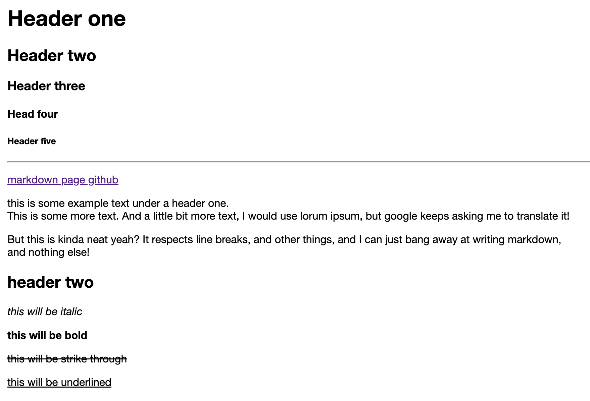
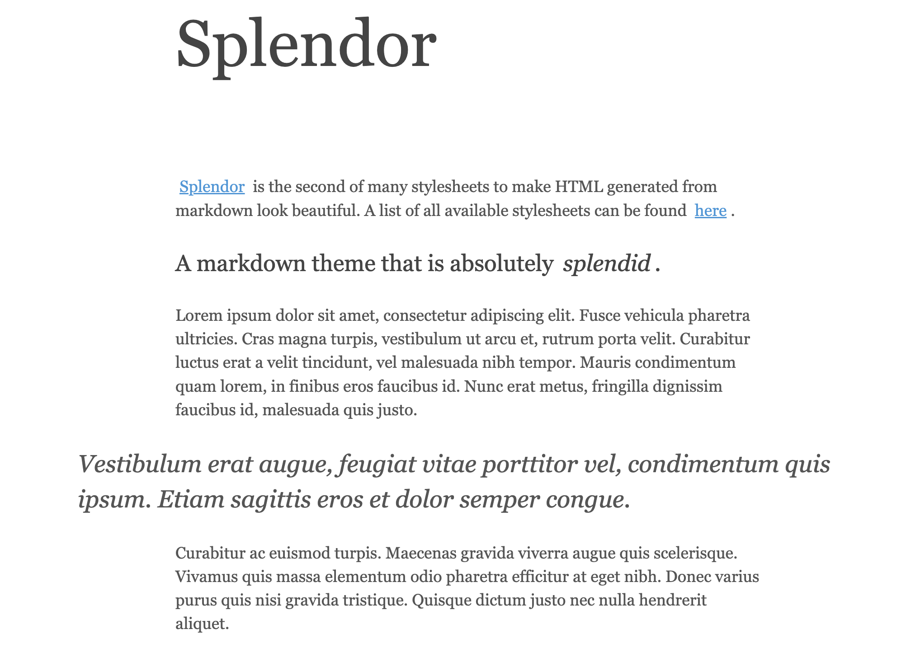
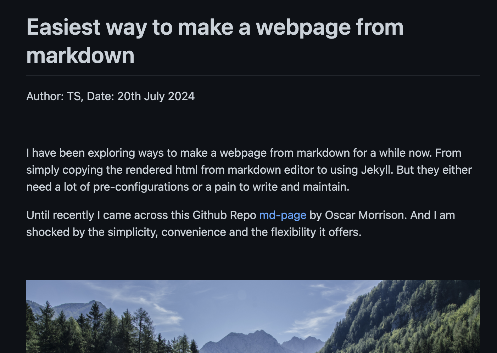

<link href="css/splendor.css" rel="stylesheet">
<script src="https://rawcdn.githack.com/oscarmorrison/md-page/232e97938de9f4d79f4110f6cfd637e186b63317/md-page.js"></script>
<script type="text/javascript">
    window.MathJax = {
      tex: {
        inlineMath: [['\\(','\\)']],
        displayMath: [['$$','$$']],
        processEscapes: true
      },
      options: {
          enableMenu: false // Disable the MathJax context menu
      }
    };
  </script>
  <script type="text/javascript" id="MathJax-script" async
    src="https://cdn.jsdelivr.net/npm/mathjax@3/es5/tex-mml-chtml.js">
  </script>  
</script>
<noscript>

# <mark>Easiest</mark> way to make a webpage from markdown

<b>Author:</b> Tengyu S, <b>Date:</b> July 20th 2024

<br>

I have been exploring ways to build a webpage from markdown for a while now. From copying the rendered html to using Jekyll. But they are either too complicated or a pain to write and maintain.

Until recently, I came across this Github repo called [md-page](https://github.com/oscarmorrison/md-page) by Oscar Morrison. And I am shocked by the simplicity, convenience and the flexibility it offers.

<br>

<div class="wide-image">
    
</div>

<br>

For those who want to start blogging or share a webpage without much hassle and avoid digging into the rabbit hole of html/css, here is a 5-min guide of how you can build a website from your markdown code in the easiest way.

As you may notice, this page is also made using `md-page`, with a little bit of customized css. You can find the source code [here](https://github.com/st3nv/st3nv.github.io/blob/master/blogs/Jul-20-2024_Easiest-way-md.html) for reference.


### Step 1: Write using markdown

First, you need to write your content in markdown. Simple.

### Step 2: Create the html file

In a code editor, create a new html file named `md-page.html` and add the following code in the very beginning.

<iframe src="https://www.thiscodeworks.com/embed/669b557a02128000147b8cd4" style="width: 100%; height: 112px;" frameborder="0"></iframe>

Then copy paste the markdown content under the line you just added.

That's it! It's that simple. Save and open the html file in a browser and you can see your markdown content rendered as a webpage. Here is a [demo](https://oscarmorrison.com/md-page/) by the original author and see below for a screenshot of it.

<div class="narrow-image">
    
</div>
<figcaption>Screenshot of the md-page demo</figcaption>


### Step 3: Add css

Although you are writing in markdown, you can still customize the style of the webpage using css. For those who have little knowledge of it, I would recommend starting with some examples.

- [Splendor](https://github.com/st3nv/st3nv.github.io/blob/master/blogs/css/splendor.css) by John Otander, the theme I modified and used for this page.

<div class="narrow-image">
    
</div>
<figcaption>Screenshot of the Splendor theme</figcaption>

John also made many other beautiful themes that you can find [here](https://markdowncss.github.io/).

- [Github markdown dark](https://github.com/st3nv/st3nv.github.io/blob/master/blogs/css/github-markdown-dark.css) by sindresorhus, the theme I applied in many other projects. It mimics the markdown style you see on Github. It also comes with a light version.

<div class="narrow-image">
    
</div>
<figcaption>Screenshot of the Github markdown dark theme</figcaption>

The good thing about css is that it is very easy to understand and modify. You can build your own style by changing the color, font, size, margin, padding, etc.

To add css to the html file. We first need to create a .css file. For now you can just download the css I used from this [link](https://github.com/st3nv/st3nv.github.io/blob/master/blogs/css/splendor.css) and save it as `splendor.css` in the same directory as the html file. Then add the following line in the beginning of the html file.

<iframe src="https://www.thiscodeworks.com/embed/669b894c02128000147be113" style="width: 100%; height: 112px;" frameborder="0"></iframe>

Refresh the page and you can see the style is applied to the content.

### Step 4: Publish

Once you are happy with the content and style, you can publish it to your own website. For casual sharing, I highly recommend [Github Pages](https://docs.github.com/en/pages/quickstart). It is free and there are a lot of resources online to help you set up.


### Conclusion and limitations

Of course, `md-page` is not perfect.

1. It does not support all the markdown syntax. For example, it does not support footnotes, like this[^1]. But it is good enough for most of the cases.
2. It can't render latex formulas like ($2x+1$) out of the box. You can use images of equations but there do exist a way to work around it utilizing MathJax, e.g. \\(ax^2 + bx + c = 0\\)

$$x = \frac{-b \pm \sqrt{b^2-4ac}}{2a}.$$

But it's a bit more complicated (need to tweak css) and not beginner-friendly. So I will maybe write about it in another post.


